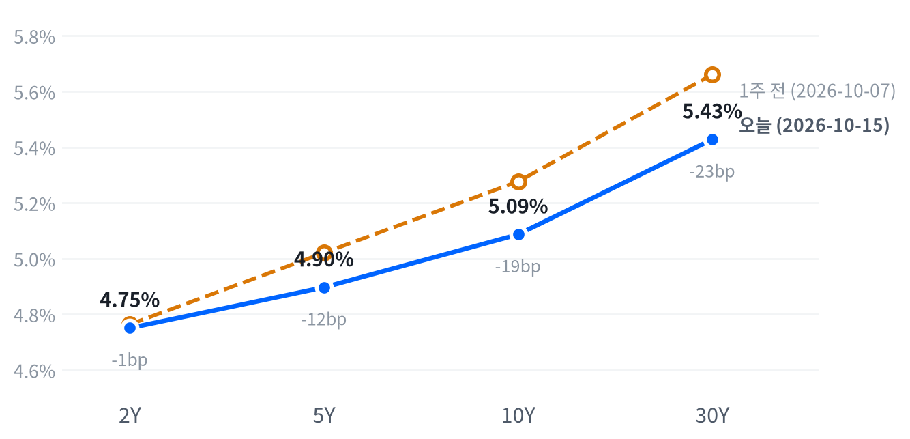

9월 생산자물가가 예상의 두 배를 넘게 올랐지만 국채금리는 전 구간에서 내렸고, 주식은 AI 하드웨어를 팔아 헬스케어·소프트웨어·소형주로 옮겨 가며 다우와 러셀2000이 1% 넘게 올랐다. S&P500은 소폭 오르는 데 그쳤고 나스닥은 제자리였다.
금리 시장은 에너지가 끌어올린 생산자물가를 10월 인상 재료로 보지 않았다고 본다. 금리가 내린 날에도 AI 하드웨어가 밀려, 이 매도는 할인율보다 AI 차입 신용과 매출의 질을 따지고 있다고 판단한다.
9월 생산자물가(PPI)가 전월비 1.3% 올라 예상을 두 배 넘게 웃돌았는데, 국채금리는 2년물부터 30년물까지 모두 내렸다. 주식에서는 AI 하드웨어 매도가 이어지는 가운데 헬스케어·소프트웨어·소형주로 돈이 옮겨 가, 시총가중 지수보다 다우·러셀2000과 동일가중 지수가 강했다.
금리 시장은 에너지가 끌어올린 생산자물가 급등을 10월 회의를 바꿀 정보로 보지 않았다고 판단한다. 금리 하락의 상당 부분은 발표 전에 진행됐고, 예상을 크게 넘은 PPI도 그 하락을 되돌리지 못했다. 소매판매 근원 둔화와 필라델피아 연은 조사의 신규주문 급랭은 오히려 성장 쪽 걱정을 보탰다. 아시아 반도체 폭락이 부른 안전자산 수요였을 수도 있으나, 하락이 장기물에 몰린 모양은 성장 재가격 쪽에 더 가깝다고 본다. 같은 날 AI 인프라 다섯 종목은 평균 2.94% 내려 S&P보다 3.27%p 뒤처졌고, TSMC가 강한 수요를 확인한 실적에도 반응하지 않았다. 매도의 무게는 할인율보다 AI 설비를 빚으로 짓는 업체의 신용과 매출의 질에 있다.
반도체·AI 하드웨어 관련주는 공급망 정점의 수요 확인에도 시장보다 약해, 금리 안정만으로는 회복을 기대하기 어렵다고 본다. CoreWeave 회사채·CDS와 하이일드 스프레드 같은 AI 차입 신용 지표가 먼저 진정되는지를 확인한 뒤에 반등의 질을 판단한다. 반대편의 헬스케어·소프트웨어 강세는 AI 하드웨어에서 빠진 돈이 옮겨 간 결과라, 10월 27~28일 FOMC까지 이 순환이 이어지는지 지켜본다. 금리 하락이 성장 둔화를 반영한 것이라면 경기에 민감한 소형주의 이날 강세는 오래가기 어렵다.
새 지표가 없는 세션에 AI 하드웨어가 안정되는데 2년물과 10년물이 함께 5bp 이상 되돌려 오르면, 이날 금리 하락은 안전자산 수요였고 성장 재가격 판단은 약해진다. CoreWeave CDS와 하이일드 스프레드가 좁혀지는데도 AI 인프라가 시장보다 계속 뒤처지면 신용 쪽 판단도 약해지고, 몰린 포지션의 청산 쪽으로 무게를 옮긴다. 확인 일정은 10월 16일 09:15(ET) 9월 산업생산, 21일 20년물·22일 5년물 입찰, 27~28일 FOMC다.
| 지수 | 종가 | 등락률 | 기준일 |
|---|---|---|---|
| 닛케이225 | 67,744.29 | -0.05% | 10월 14일 |
| 항셍 | 24,314.17 | -0.13% | 10월 14일 |
| 상해종합 | 3,767.23 | -0.89% | 10월 14일 |
| DAX | 25,298.61 | +0.15% | 10월 14일 |
| FTSE100 | 10,724.90 | +0.70% | 10월 14일 |
| 유로스톡스50 | 6,190.37 | +0.38% | 10월 14일 |
| VIX | 16.46 | -2.43% | 10월 15일 |
아시아·유럽 지수는 10월 15일 종가가 들어오지 않아 모두 10월 14일 종가다.
미국 증시는 아시아와 엇갈렸다. 표의 아시아 세 지수는 10월 14일 종가로 모두 소폭 내렸고, 15일 아시아 장은 반도체 투매로 훨씬 나빴다. 코스피가 7.57% 급락해 장중 서킷브레이커가 발동됐고 닛케이도 장중 5% 안팎 밀렸다는 보도가 나왔다. 유럽은 14일 세 지수가 모두 올라 미국과 같은 쪽이었다.
야간 선물은 PPI·소매판매가 나온 08:30(ET)에 저점을 찍었다. S&P 선물(ES)은 7,729, 나스닥 선물(NQ)은 29,711까지 밀렸다가 정규장 마감 시각에 고점으로 끝났다. 밤사이 SK하이닉스(-11.06%)와 삼성전자(-9.48%)가 폭락해 기술주를 눌렀고, 현물은 나스닥 -1.23%, S&P -0.41%의 갭으로 하락 출발했다. 러셀2000만 보합(+0.03%)에서 열렸다.
평균적인 종목이 지수보다 강했다. 참여도는 고르게 오름이었다. 동일가중 S&P에서 시총가중 지수를 뺀 수익률 차이가 +1.09%p로 상승이 고르게 퍼졌고, 세 지수 모두 고점권에서 끝났다.
고점권·저점권 경계는 최근 2,259거래일의 일간 종가 위치 이력으로 다시 잰 기준이다.
금리 하락이 먼저 왔고, 예상을 크게 넘은 PPI도 그것을 되돌리지 못했다. 주가는 개장 직후 저점에서 오후 내내 올랐다. 오른 쪽은 헬스케어·소비재·금융과 소형주였고, AI 하드웨어는 장중 반등하고도 마이너스로 끝났다. 장 마감 뒤에는 테슬라 3분기 실적 발표가 잡혀 있었고, 그 결과와 시간외 반응은 이 글의 자료에 없다.
출처: Ajupress, TradingKey
| 지수 | 종가 | 등락률 |
|---|---|---|
| 러셀2000 | 2,767.27 | +1.38% |
| 다우존스 | 52,177.69 | +1.08% |
| S&P500 가치주 | 235.66 | +0.68% |
| S&P500 | 7,744.06 | +0.33% |
| 나스닥 | 26,713.03 | +0.08% |
| S&P500 성장주 | 141.67 | -0.11% |
| 섹터 | 등락률 |
|---|---|
| 헬스케어 | +1.86% |
| 소재 | +1.79% |
| 경기소비재 | +1.71% |
| 커뮤니케이션서비스 | +1.46% |
| 금융 | +1.38% |
| 부동산 | +1.21% |
| 필수소비재 | +0.72% |
| 산업재 | +0.51% |
| 유틸리티 | -0.17% |
| 기술 | -0.65% |
| 에너지 | -1.58% |
AI 하드웨어에서 빠진 돈이 다른 업종과 소형주로 옮겨 가며 S&P500은 0.33% 오른 7,744로 마감했다. 러셀2000은 1.38%, 다우는 1.08% 올랐고 나스닥은 0.08% 오르는 데 그쳤다. S&P와 나스닥은 평소보다 작게 움직였지만 러셀2000은 평소보다 크게 움직였다. S&P는 최근 2년(504거래일) 가운데 이보다 높았던 날이 16일뿐인 고점 부근에 있다.
S&P500·나스닥·러셀2000의 하루 움직임은 최근 60거래일 평균 하루 폭의 각각 0.47배·0.07배·1.63배다.
러셀2000의 강세는 AI 하드웨어에서 나온 돈의 순환매와 단기금리 하락이 겹친 결과로 본다. 차입 부담이 큰 AI 종목에서 기업용 소프트웨어와 방어 업종으로 돈이 옮겨 갔다는 보도가 나왔고, 소재·경기소비재·금융처럼 경기에 민감한 업종도 1% 넘게 올랐다. 2년물 금리가 내려 차입 비중이 큰 소형주의 조달 부담을 덜었다. 소형주 강세를 직접 다룬 보도는 확인하지 못했다.
지수 상승은 경기소비재(+0.23%p)·커뮤니케이션서비스(+0.19%p)·헬스케어(+0.18%p)·금융(+0.15%p)이 만들었고, 기술이 0.22%p를 덜어냈다. 추정 기여도로 업종 합이 설명하지 못하는 부분은 -0.21%p다. 성장주가 0.11% 내리고 가치주가 0.68% 올라 스타일도 가치 쪽으로 기울었다.
추정 기여도는 업종 비중을 직접 받지 않아, 최근 252거래일 지수·업종 수익률로 추정한 비중을 곱한 값이다. 소재와 부동산은 비중을 추정할 수 없어 빠졌다.
세 지수 모두 개장 첫 30분이 저점이었고, 오후 내내 올라 하루 범위의 꼭대기 근처에서 끝났다. 나스닥은 시가 대비 1.5% 가까이 올라 개장 하락 갭을 거의 메웠다. 상승이 고르게 퍼진 데다 고점권 마감이라 매수세는 마감까지 살아 있었지만, 그 돈이 AI 하드웨어로 돌아오지는 않았다.
출처: Benzinga, Quartz
| 만기 | 종가 | 전일比(bp) | 1주 전 | 주간 변화(bp) |
|---|---|---|---|---|
| 2Y | 4.751% | -5.1 | 4.764% | -1.3 |
| 5Y | 4.897% | -9.5 | 5.021% | -12.4 |
| 10Y | 5.087% | -10.3 | 5.277% | -19.0 |
| 30Y | 5.428% | -9.6 | 5.661% | -23.3 |
네이버 국채 종가, 전 만기 10월 15일 기준. 1주 전은 10월 7일 종가다.

1주 전과 비교하면 2년물은 거의 그대로이고 30년물이 가장 크게 내려, 장기물이 이끈 불 플래트닝이다.
국채금리가 전 구간에서 크게 내렸다. 10년물은 10.3bp 내린 5.087%, 30년물은 9.6bp 내린 5.428%로 둘 다 평소 하루 움직임의 두 배를 넘었다. 그래도 10년물은 같은 2년 기준으로 이보다 높았던 날이 16일뿐인 고점권에 있다. 2년물은 5.1bp 내린 4.751%로 덜 내려, 2s10s는 33.6bp로 전날(38.8bp)보다 5.2bp 좁혀졌다. 5s30s는 53.1bp다.
10년물·30년물의 하루 움직임은 최근 60거래일 평균 하루 폭의 각각 2.34배·2.46배다.
PPI가 예상의 두 배를 넘었는데도 금리가 내린 것은 하락의 상당 부분이 발표 전에 진행됐기 때문이다. 10년물은 장 초반 5.19%에서 PPI 발표 전 5.08%까지 내려 9월 25일 이후 최저였다는 보도가 나왔다. 보먼 연준 이사가 14일 추가 조치를 서두를 필요가 없다고 말했고, 데일리 샌프란시스코 연은 총재도 인상이 필요하더라도 서두를 이유는 없다고 말한 것으로 전해져 인상 기대를 눌렀다. 발표 뒤에는 소매판매 컨트롤 그룹 둔화가 하락 쪽에 무게를 더했다. 아시아 폭락과 AI 신용 우려에 따른 안전자산 수요가 얼마나 섞였는지는 장중 금리 자료가 없어 가리지 못한다.
10월 15일 10년 기대인플레는 3bp 내린 2.32%다. 명목 10.3bp 하락 가운데 기대인플레 몫은 3bp 안팎이고 나머지는 실질금리 쪽일 가능성이 크지만, 15일 실질금리가 나와야 확정된다. 명목금리를 실질금리와 기대인플레로 나눈 최신 자료(10월 14일)에서도 10년물 2bp 하락은 실질금리(-4bp)가 이끌었다. 생산자물가가 튄 날 기대인플레가 오히려 내려, 시장은 에너지발 물가를 장기 물가 기대로 옮기지 않았다. 하이일드 스프레드는 10월 14일 3.25%로 5거래일 사이 16bp 넓어졌다.
5년 뒤 5년 명목금리 5.38%, 실질 3.04%(10월 14일 기준). 기대인플레 쪽 수치와의 교차검증은 할 수 없었고, 위험 프리미엄이 섞인 값이다.
출처: economies.com, Reuters
| 통화쌍 | 종가 | 등락률 | 기준일 |
|---|---|---|---|
| DXY | 102.03 | -0.49% | 10월 15일 |
| USD/KRW | 1,341.96 | +0.02% | 10월 15일 |
| USD/JPY | 158.11 | -0.14% | 10월 15일 |
| EUR/USD | 1.1217 | +0.53% | 10월 15일 |
달러가 유로에 밀렸다. 달러지수는 0.49% 내린 102.03으로 평소보다 크게 움직였고, 유로/달러는 0.53% 오른 1.1217이었다. 엔/달러는 158.11로 소폭 내렸다. 원/달러는 1,342원으로 제자리였고, 이보다 낮았던 날이 7일뿐인 원화 강세 자리를 지켰다.
달러지수의 하루 움직임은 최근 60거래일 평균 하루 폭의 1.58배다. 환율은 뉴욕 16:00 ET 가격, 전 거래일 같은 시각 대비다.
달러 약세는 미국 금리가 전 구간에서 내려 금리차가 좁혀진 것과 같은 방향이라, 금리차가 달러를 눌렀다고 본다. 위험회피 때 흔히 나오는 엔 강세는 작았고, 달러지수 하락(0.49%)의 대부분은 유로 강세(0.53%)에서 나왔다. 지표 발표 뒤 달러가 약해졌다는 보도는 있었지만 원인을 짚지는 않았다.
출처: Reuters
| 품목 | 종가 | 등락률 |
|---|---|---|
| WTI | $96.26 | +2.42% |
| Brent | $105.75 | -0.27% |
| 천연가스 | $3.240 | -0.86% |
| 금 | $4,195.70 | +1.77% |
유가는 미국 재고에, 금은 금리 하락에 반응했다. WTI는 2.42% 오른 96.26달러로 이보다 높았던 날이 37일뿐인 높은 수준이고, 브렌트는 0.27% 내린 105.75달러였다. 금은 1.77% 오른 4,196달러, 천연가스는 0.86% 내렸다.
WTI만 오른 것은 미국 원유 재고가 860만 배럴 줄어 두 달여 만에 가장 크게 감소했기 때문이라는 보도가 나왔다. 미국 행정부가 러시아 그림자 선단 제재 완화를 검토한다는 보도는 브렌트에 하방 재료였다. 두 유종의 가격 차는 9.49달러로 전날(12.05달러)보다 2.56달러 좁혀져, 이날 유가는 미국 안의 수급이 움직였다고 본다.
금은 PPI가 나온 08:30(ET)에 저점을 찍은 뒤 금리와 달러가 내리는 동안 꾸준히 올라 고점 부근에서 끝났다. 10월 15일 실질금리가 아직 없어 몫을 나누지 못하지만, 생산자물가 급등보다 금리 하락과 달러 약세가 금을 움직였다고 본다.
원자재·환율은 뉴욕 16:00 ET 가격, 전 거래일 같은 시각 대비다. 결제가와 다를 수 있다.
출처: DTN
미국 경기 국면은 교착을 유지한다. 9월 생산자물가가 물가 점수를 -0.305에서 0.017로 끌어올렸고 성장 점수도 0.04로 올라와, 두 점수가 가리키는 자리도 교착이다. 10월 14일 골디락스에서 옮겨 온 지 2영업일째다.
물가 쪽은 소비자물가·생산자물가 전월비의 석 달 평균이 재가속으로 돌아섰지만 전년비와 PCE는 아직 내려오고 있어 서로 맞선다. 성장 쪽은 소비가 보합으로 올라섰고 고용은 개선, 생산·활동은 악화로 갈렸다. 성장 좌표는 11월 6일 10월 고용이 다시 점검한다.
고용은 개선을 유지한다(7개 중 4개). 계속 실업수당 청구가 1,710,000건으로 줄어 4주 평균이 뚜렷이 낮아졌고, 신규 청구 4주 평균(198,500건)과 신규 청구(199,000건)도 완만한 개선 쪽이다. 구인·고용·임금의 석 달 평균은 약해 전체 세기는 미미하다. 고용축 +0.405
| 지표 | Actual | Forecast | Previous | 발표일 | 컨센 대비 | 직전 대비 | 추세 |
|---|---|---|---|---|---|---|---|
| 구인건수(8월) | 7,079K | — | 7,335K | 2026-08 기준월 | 악화 | 악화(미미) · 3개월 평균 7,336K → 7,199K | |
| 신규 실업수당 청구 | 199,000 | — | 198,000 | 2026-10-15 (10월 10일 주간) | 악화 | 개선(완만) · 4주 평균 204K → 198K | |
| 신규 청구 4주 평균 | 198,500 | — | 198,250 | 2026-10-15 (10월 10일 주간) | 악화 | 개선(완만) · 4주 평균 206K → 200K | |
| 계속 실업수당 청구 | 1,710,000 | — | 1,714,000 | 2026-10-15 (10월 3일 주간) | 개선 | 개선(뚜렷) · 4주 평균 1,757K → 1,709K | |
| 비농업 고용 변화(9월) | +29K | — | +133K | 2026-09 기준월 | 악화 | 악화(미미) · 3개월 평균 +81K → +51K | |
| 실업률(9월) | 4.2% | — | 4.1% | 2026-09 기준월 | 악화 | 개선(미미) · 3개월 평균 4.27% → 4.13% | |
| 평균시간당임금 MoM(9월) | +0.13% | — | +0.32% | 2026-09 기준월 | 악화 | 악화(미미) · 3개월 평균 +0.21% → +0.19% |
노동부가 10월 15일 발표한 신규 청구는 199,000건으로 1,000건 늘었고, 전주치는 197,000건에서 198,000건으로 올려 고쳐졌다. 계속 청구(10월 3일 주간)는 1710000건으로 4,000건 줄었고, 전주치는 2,000건 낮춰졌다.
계절조정 전 신규 청구는 11.4% 늘었는데, 노동부는 계절요인이 11.0% 증가를 예상했다고 밝혀 특이 요인은 작다. 피보험 실업률은 1.1%로 그대로다. 해고가 적고 재취업이 늘어 고용 판단을 받치는 발표였지만, 이날 금리 하락을 설명하는 재료는 아니었다.
생산·활동은 악화를 유지한다(5개 중 2개). 기존주택 판매의 석 달 평균이 뚜렷이 낮아진 것이 근거다. 필라델피아 연은 제조업 지수는 20.9로 예상을 밑돌았고 신규주문이 4.3으로 25포인트 떨어진 반면, 판매가격 지수는 40.1로 2025년 5월 이후 가장 높았다. 공장에서는 수요가 식는데 가격은 오르고 있다. 생산·활동축 -0.467
| 지표 | Actual | Forecast | Previous | 발표일 | 컨센 대비 | 직전 대비 | 추세 |
|---|---|---|---|---|---|---|---|
| 산업생산 MoM(8월) | +0.02% | — | +0.20% | 2026-08 기준월 | 악화 | 보합 · 3개월 평균 +0.24% → +0.14% | |
| 내구재주문 MoM(8월) | -0.07% | — | +0.87% | 2026-08 기준월 | 악화 | 악화(완만) · 3개월 평균 +1.95% → +0.46% | |
| 신규주택판매(8월) | 684K | — | 643K | 2026-08 기준월 | 개선 | 개선(미미) · 3개월 평균 645K → 666K | |
| 기존주택판매(9월) | 399만 | — | 393만 | 2026-09 기준월 | 개선 | 악화(뚜렷) · 3개월 평균 4,120K → 3,993K | |
| 실질GDP QoQ 연율(2분기) | +2.2% | — | +2.5% | 2026년 2분기 기준 | 악화 | — | |
| 필라델피아 연은 제조업 지수(10월) | 20.9 | 28.4 | 37.8 | 2026-10-15 | 하회▼ | — | — |
소비 판단은 악화에서 보합으로 바뀌었다(2개 중 1개 개선). 9월 소매판매가 0.77% 늘어 석 달 평균의 하락이 멈췄고(보합, 미미), 미시간대 소비자심리의 석 달 평균은 미미하게 개선됐다. 증가분의 상당 부분이 휘발유 값이라 소비의 실제 힘은 이 판정보다 약하다. 소비축 +0.181
| 지표 | Actual | Forecast | Previous | 발표일 | 컨센 대비 | 직전 대비 | 추세 |
|---|---|---|---|---|---|---|---|
| 소매판매 MoM(9월) | +0.77% | 0.3% | +1.29% | 2026-10-15 | 상회▲ | 악화 | 보합 · 3개월 평균 +0.61% → +0.55% |
| 미시간대 소비자심리(8월) | 51.7 | — | 55.2 | 2026-08 기준월 | 악화 | 개선(미미) · 3개월 평균 49.3 → 52.1 |
Census가 10월 15일 발표한 9월 소매·외식 판매는 전월비 0.77% 늘어 예상(0.3%)을 크게 넘었고, 8월은 1.1%에서 1.3%로 올려 고쳐졌다. 자동차 제외 판매는 0.9% 늘었다.
증가분의 대부분은 휘발유 값이다. 주유소 판매가 6.4% 뛰었고, 자동차와 주유소를 뺀 판매는 0.2%에 그쳐 Census가 0과 통계적으로 구분되지 않는다고 표시했다. GDP 소비에 들어가는 컨트롤 그룹은 0.1% 늘어 예상(0.3%)을 밑돌았다.
휘발유 값이 다른 지출을 밀어내는 모습이라 헤드라인과 달리 성장에는 약한 신호로 판단한다. 가격을 조정하기 전 수치라 실질 소비는 더 약할 수 있고, 이 발표가 이날 금리 하락 쪽 재료가 됐다.
물가 판단은 둔화에서 교착으로 바뀌었다(8개 중 3개 재가속·4개 둔화). 생산자물가(1.34%)가 소비자물가 전월비(0.65%)·근원 전월비(0.33%)와 함께 석 달 평균의 완만한 재가속 쪽에 섰고, 전년비와 PCE는 아직 둔화 쪽이라 맞선다. 물가축 +0.017
| 지표 | Actual | Forecast | Previous | 발표일 | 컨센 대비 | 직전 대비 | 추세 |
|---|---|---|---|---|---|---|---|
| CPI YoY(9월) | 3.72% | 3.6% | 3.35% | 2026-10-14 | 상회▲ | 상승 | 둔화(미미) · 3개월 평균 3.80% → 3.46% |
| CPI MoM(9월) | +0.65% | 0.6% | +0.40% | 2026-10-14 | 부합= | 상승 | 재가속(완만) · 3개월 평균 +0.23% → +0.37% |
| Core CPI YoY(9월) | 2.57% | 2.5% | 2.45% | 2026-10-14 | 상회▲ | 상승 | 둔화(미미) · 3개월 평균 2.71% → 2.49% |
| Core CPI MoM(9월) | +0.33% | 0.2% | +0.29% | 2026-10-14 | 상회▲ | 상승 | 재가속(완만) · 3개월 평균 +0.19% → +0.28% |
| PPI 최종수요 MoM(9월) | +1.34% | 0.5~0.6% | +0.47% | 2026-10-15 | 상회▲ | 상승 | 재가속(완만) · 3개월 평균 +0.49% → +0.66% |
| PCE 물가 YoY(8월) | 3.42% | — | 3.36% | 2026-08 기준월 | 상승 | 둔화(미미) · 3개월 평균 3.59% → 3.41% | |
| Core PCE YoY(8월) | 3.01% | — | 2.98% | 2026-08 기준월 | 상승 | 둔화(미미) · 3개월 평균 3.12% → 3.01% | |
| 미시간대 1년 기대인플레(8월) | 4.0% | — | 4.2% | 2026-08 기준월 | 하락 | 교착 · 3개월 평균 4.43% → 4.27% |
BLS가 10월 15일 발표한 9월 최종수요 생산자물가는 전월비 1.34% 올라 2022년 3월 이후 가장 컸고, 예상(0.5~0.6%)의 두 배를 넘었다. 전년비는 6.3%, 식품·에너지·무역서비스를 뺀 지수는 0.5%(8월 0.3%)였다. 8월은 0.4%에서 0.5%로 올려 고쳐졌다.
BLS는 상품 가격 상승(2.6%)의 80% 이상이 에너지(10.8%)에서 나왔고, 상품 상승의 절반은 휘발유(20.3%)라고 밝혔다. 서비스는 0.8% 올라 4월 이후 가장 컸고, 그 절반 가까이를 무역 마진(1.4%)이 만들었다. 식품도 1.2% 올랐다.
헤드라인은 대부분 에너지지만, 디젤이 식품·운송으로 번진 흔적과 PCE에 들어가는 호텔·항공료 급등이 함께 있어 일회성으로만 보지 않는다. 이코노미스트들은 9월 근원 PCE 추정치를 0.32~0.35%로 잡았다는 보도가 나왔다. 이 발표가 물가 점수를 교착 한가운데로 밀었지만, 금리시장은 10월 인상 쪽으로 움직이지 않았다.
직전 대비는 Actual을 Previous와 비교한 것이고, 추세는 최근 3개월 평균을 그 앞 3개월 평균과 비교한 것입니다(주간 실업수당 청구는 4주 평균끼리). 추세의 세기는 그 지표가 평소 움직이는 폭에 견준 크기이고, 작은 변화는 보합으로 봅니다. 분기 지표인 GDP는 두 비교가 같은 숫자를 보므로 직전 대비만 싣습니다.
연준의 다음 인상은 12월 9일 FOMC의 25bp라는 판단을 유지한다. CME FedWatch 기준 10월 27~28일 FOMC 인상 확률은 PPI 발표 뒤 약 34%로, 같은 매체가 전한 전날 마감 무렵 값(35%)과 거의 같았다. 시장이 다음 인상을 여전히 12월로 본다는 보도도 나왔다. 생산자물가가 예상의 두 배를 넘었는데도 확률이 움직이지 않아 시점을 10월로 당기지 않는다.
반대편 견해도 있다. 호텔·항공료처럼 PCE에 들어가는 항목이 크게 올라 이달 인상을 예상하는 이코노미스트가 나왔고, Oxford Economics의 매튜 마틴은 이달 말 회의의 인상을 예상한다고 밝혔다.
10월 27일 FOMC 회의 전까지 CME FedWatch 10월 인상 확률이 장 마감 무렵 기준으로 과반에 올라서면 시점을 10월로 당긴다. 11월 6일 10월 고용에서 실업률이 3월 이후 범위(4.1~4.3%) 위로 올라서면 인상 우위 판단을 철회한다.
채권과 귀금속은 우호를 유지한다. 물가가 교착에 머물러 실질금리가 정점을 지났다고 확인하기는 이르지만, 성장 신호가 약해지면 장기 실질금리를 누르는 힘은 커진다. 채권은 근원 PCE 전년비가 3.0% 아래로 내려오거나 30년물이 5.05% 아래로 돌아와야, 귀금속은 10년 실질금리가 더 내리거나 금의 20일 수익률이 15%를 넘어야 확인된다.
주식과 에너지는 중립이다. 소비 판단이 보합으로 올라섰지만 그 힘이 휘발유 값에서 나와 이익 쪽 힘이 커졌다고 보기 어렵고, 에너지 가격이 다른 지출을 밀어낸다는 점은 주식에 부담이다. 주식은 ISM 제조업 PMI가 50을 웃돌며 재가속하거나 10년물이 4.5% 아래로 내려와야, 에너지는 호르무즈 통항과 공급 차질의 해소가 확인돼야 판단이 바뀐다.
달러는 비우호로 둔다. 성장이 식고 미국 금리가 내려가면 금리차가 좁혀져 달러를 누른다는 전제는 그대로이고, 인상 시점이 10월로 당겨지지 않아 미국 금리 우위가 커지지도 않았다. 달러지수가 20거래일 동안 3% 이상 더 내리거나 FedWatch에 인하 확률이 나타나야 확인된다.
메모리는 우호, AI 인프라는 중립이다. 이 그룹은 매크로 국면과 따로 움직인다. TSMC가 강한 수요와 더 큰 설비투자를 확인했는데도 AI 인프라가 밀려, 지금 주가를 움직이는 것은 사이클의 수요보다 그 투자를 빚으로 대는 쪽의 신용이라고 본다. 메모리는 마이크론 등 주요 업체의 가이던스 상향이 이어지는지로, AI 인프라는 30년물이 5.4%를 넘어 더 오르는지와 하이퍼스케일러의 3분기 설비투자 가이던스로 판단한다.
08:30(ET) 세 발표가 함께 나온 직후 나스닥은 1개월 저점 근처까지 밀렸고, S&P 선물도 그 시각에 저점을 찍었다. 컨센서스와의 차이는 PPI가 가장 컸지만 금리는 내렸고 달러도 약해졌다. 시장은 생산자물가의 상회보다 소매판매 컨트롤 그룹의 하회와 필라델피아 연은 신규주문 급락에 더 크게 반응했다.
출처: investingLive, CNBC, Reuters
| 지수 | 순위(5거래일 전) | 1개월 | 3개월 | SPY 대비 3개월 | 대비 변화 | 12-1 모멘텀 | 변동성 | 1일 VaR 95% | 베타 | 50/200일선 | 52주 고점 대비 |
|---|---|---|---|---|---|---|---|---|---|---|---|
| 소프트웨어 IGV | 1(2) | +4.4% | +18.1% | +14.0%p | -1.8%p | -7.6% | 32.9% | 2.2% | 1.64 | 위/위 | -6.4% |
| 에너지 XLE | 2(1) | +4.6% | +16.1% | +12.0%p | -4.4%p | +51.6% | 21.4% | 2.1% | -0.55 | 위/위 | -1.6% |
| 초대형주 Top 50 XLG | 5(4) | +3.1% | +5.4% | +1.3%p | -0.1%p | +9.1% | 13.6% | 0.9% | 1.20 | 위/위 | -1.8% |
| 금속·광업 XME | 8(8) | -6.8% | +3.1% | -1.0%p | +0.8%p | +0.1% | 35.8% | 3.7% | 1.96 | 아래/아래 | -23.6% |
| 반도체·AI 하드웨어 SMH | 11(10) | +2.4% | +0.4% | -3.7%p | -0.3%p | +64.1% | 36.8% | 4.0% | 2.20 | 아래/위 | -16.5% |
| 모멘텀 팩터 MTUM | 12(11) | +0.6% | 0.0% | -4.1%p | -0.1%p | +18.8% | 25.2% | 2.6% | 1.42 | 아래/위 | -12.5% |
| 금융 XLF | 14(13) | -0.8% | -1.4% | -5.5%p | -0.4%p | +6.3% | 12.6% | 1.4% | 0.63 | 아래/위 | -5.3% |
| 경기소비재 XLY | 15(17) | +3.2% | -1.5% | -5.6%p | +1.6%p | -5.4% | 19.3% | 1.6% | 1.14 | 아래/아래 | -8.4% |
| 전력망 GRID | 17(16) | -1.0% | -3.0% | -7.1%p | -1.0%p | +15.1% | 25.2% | 2.7% | 1.57 | 아래/아래 | -13.3% |
| 산업재 XLI | 19(21) | -0.2% | -6.2% | -10.3%p | -0.3%p | +11.1% | 15.3% | 1.5% | 0.85 | 아래/아래 | -9.7% |
| 소형주 IWM | 20(19) | -3.1% | -6.2% | -10.3%p | -1.6%p | +15.7% | 13.7% | 1.4% | 0.97 | 아래/아래 | -9.6% |
| 소형 성장 IWO | 22(22) | -3.7% | -7.6% | -11.7%p | -0.9%p | +9.8% | 17.9% | 2.0% | 1.26 | 아래/아래 | -12.0% |
| 은행 KBE | 23(20) | -4.3% | -9.0% | -13.1%p | -3.3%p | +14.6% | 14.4% | 1.4% | 0.57 | 아래/아래 | -10.8% |
| 방산 ITA | 24(25) | -3.9% | -10.2% | -14.3%p | +2.7%p | +2.4% | 20.3% | 2.2% | 0.80 | 아래/아래 | -18.2% |
| 주택건설 XHB | 25(24) | -0.5% | -11.1% | -15.1%p | -1.0%p | -9.5% | 25.3% | 2.4% | 1.36 | 아래/아래 | -20.3% |
| 지수 | 순위(5거래일 전) | 1개월 | 3개월 | SPY 대비 3개월 | 대비 변화 | 12-1 모멘텀 | 변동성 | 1일 VaR 95% | 베타 | 50/200일선 | 52주 고점 대비 |
|---|---|---|---|---|---|---|---|---|---|---|---|
| 헬스케어 XLV | 3(3) | +6.0% | +10.4% | +6.3%p | +4.1%p | +19.4% | 17.3% | 1.4% | 0.01 | 위/위 | 0.0% |
| 배당 SCHD | 6(6) | +1.6% | +4.4% | +0.3%p | 0.0%p | +29.3% | 11.0% | 1.0% | 0.19 | 위/위 | -2.4% |
| 퀄리티 팩터 QUAL | 7(5) | +4.3% | +4.3% | +0.2%p | -0.2%p | +13.6% | 9.2% | 0.7% | 0.77 | 위/위 | -0.4% |
| 필수소비재 XLP | 9(9) | +4.7% | +2.4% | -1.7%p | +1.3%p | +7.5% | 15.2% | 1.4% | -0.04 | 위/위 | -1.8% |
| 저변동성 SPLV | 18(18) | +1.3% | -3.2% | -7.3%p | +0.1%p | +1.9% | 9.0% | 0.8% | 0.09 | 위/위 | -5.1% |
| 유틸리티 XLU | 21(23) | +1.5% | -7.1% | -11.2%p | +0.5%p | -8.0% | 14.3% | 1.4% | 0.26 | 아래/아래 | -10.9% |
| 지수 | 순위(5거래일 전) | 1개월 | 3개월 | SPY 대비 3개월 | 대비 변화 | 12-1 모멘텀 | 변동성 | 1일 VaR 95% | 베타 | 50/200일선 | 52주 고점 대비 |
|---|---|---|---|---|---|---|---|---|---|---|---|
| 일본 EWJ | 4(7) | -1.6% | +5.5% | +1.4%p | +1.2%p | +26.4% | 18.8% | 1.5% | 1.19 | 아래/위 | -3.9% |
| 신흥국 EEM | 10(12) | -2.7% | +1.1% | -3.0%p | +0.9%p | +26.5% | 22.1% | 2.1% | 1.39 | 아래/위 | -10.2% |
| 유럽 VGK | 13(14) | -1.4% | -1.3% | -5.4%p | +0.7%p | +13.8% | 12.3% | 1.2% | 0.77 | 아래/위 | -6.2% |
| 중국 MCHI | 16(15) | -1.2% | -2.4% | -6.5%p | -0.4%p | -14.8% | 15.4% | 1.7% | 0.48 | 아래/아래 | -19.7% |
| 지수 | 순위(5거래일 전) | 1개월 | 3개월 | SPY 대비 3개월 | 대비 변화 | 12-1 모멘텀 | 변동성 | 1일 VaR 95% | 베타 | 50/200일선 | 52주 고점 대비 |
|---|---|---|---|---|---|---|---|---|---|---|---|
| S&P 500 SPY | – | +2.6% | +4.1% | 0.0%p | – | +14.8% | 11.0% | 0.8% | 1.00 | 위/위 | -0.9% |
| S&P 500 동일가중 RSP | – | +1.7% | +1.1% | -3.0%p | – | +14.0% | 10.2% | 0.9% | 0.64 | 아래/위 | -3.1% |
| 나스닥 100 QQQ | – | +3.4% | +4.8% | +0.7%p | – | +18.3% | 18.0% | 1.7% | 1.49 | 위/위 | -4.2% |
가격 기준 시장 국면은 강세이고, 7월 31일 횡보에서 넘어온 뒤 54거래일째다. SPY는 52주 고점보다 0.94% 낮은 771.79로 50일선(767.47) 위를 지켰다. 동일가중 지수(RSP)는 이날 시총가중 지수보다 크게 올랐지만 여전히 50일선 아래에 있어, 지수의 강세가 소수 대형주에 기댄 모양은 그대로다.
한 주 사이 SPY 대비 3개월 초과수익이 가장 크게 바뀐 업종은 에너지와 헬스케어다. 에너지는 1위에서 2위로 내려왔고 초과수익이 4.39%p 줄어 11.99%p가 됐다. 헬스케어는 3위를 지킨 채 초과수익이 4.14%p 늘어 6.32%p가 됐다. 반도체·AI 하드웨어는 10위에서 11위로 밀렸지만 초과수익 변화는 -0.29%p로 작아, 이번 주 매도가 3개월 상대 성과를 크게 더 깎지는 않았다. 방어 업종으로 돈이 옮겨 가고 에너지가 밀린 이날 흐름이 순위에도 나타났다.
위험 신호는 엇갈린다. 하이일드 스프레드는 10월 14일 3.25%로 5거래일 사이 16bp 넓어져 AI 차입 신용 우려와 같은 쪽을 가리키지만, VIX는 16.46으로 최근 2년의 한가운데쯤이다. 순유동성은 4주 사이 늘었고 금융여건지수는 조금 조여졌지만 아직 평균보다 느슨해, 유동성 방향은 중립이다.
엔비디아(-1.84%)는 반도체·AI 하드웨어 관련주의 약세를 이어 간 종목이다. AI 기업의 부채 부담에 차입 비용 상승이 겹쳤다는 우려가 매도 이유로 거론됐고, 필라델피아 반도체지수는 0.9% 내려 7거래일 연속 하락했다는 보도가 나왔다. 장중 반등은 젠슨 황 CEO가 CoreWeave의 자본 조달 비용이 내려가고 있다며 지지 발언을 한 시점과 겹친다. CoreWeave는 개장 전 6% 하락에서 14:00(ET) 무렵 2.86% 상승으로 돌아섰다는 보도가 나왔다. 채권시장은 여전히 회의적이어서, 같은 날 이 회사 2031년 만기 회사채 수익률은 15.78%, 5년 CDS는 1,088bp였다. 엔비디아 고유의 악재는 확인되지 않았다.
마이크로소프트(+1.08%)와 서비스나우(+6.14%)는 소프트웨어 업종의 상대 강세를 받친 종목들이다. 차입 부담이 큰 AI 종목에서 기업용 소프트웨어로 돈이 옮겨 갔다는 보도가 나왔다. 서비스나우는 TD Cowen이 14일 목표주가를 140달러에서 165달러로 올린 것도 재료로 거론됐다. 마이크로소프트 고유의 재료는 확인되지 않았다.
일라이 릴리(+3.55%)는 헬스케어가 업종 1위에 오른 날 지수 기여 상위였다. AI 관련주에서 빠져나온 돈이 릴리·유나이티드헬스 같은 방어 종목으로 갔다는 보도가 나왔고, 한 운용사 매니저는 조달 비용이 오르는 국면에서는 비경기 방어주가 가장 강하다고 말했다. 릴리 고유의 재료는 확인되지 않았다.
델(-6.80%)과 HPE(-7.10%)는 Barclays가 14일 투자의견을 낮춘 뒤 2거래일째 밀렸고, 델은 2거래일 동안 약 17% 내렸다는 보도가 나왔다. Barclays는 서버 매출 강세가 기업의 AI 수요보다 메모리 원가 전가 덕이고, 메모리 가격이 정상화되면 이 지지가 사라질 수 있다고 봤다. 서버 업체 매출의 질이 AI 하드웨어 관련주 전반의 부담으로 남았다.
아리스타(-5.04%)는 AI 하드웨어 관련주의 약세를 키운 종목이다. 델 하향 여파로 슈퍼마이크로와 함께 약했다는 보도가 나왔고, 아리스타 고유의 재료는 확인되지 않았다.
출처: Quartz, Benzinga, investingLive
이날은 새 판단을 세우지 않고 기존 판단 다섯 가지를 이어 점검한다. 쟁점은 물가가 예상을 크게 넘었는데 금리가 내린 이유, 그리고 금리가 내린 날에도 AI 하드웨어가 밀린 이유다.
AI 인프라 급락을 신용·수익성 쪽 매도로 본 판단(10월 14일)은 아직 확인 구간에 들어가지 않았다. 10월 16일 09:30(ET)부터 27일 종가까지, 2년물 종가가 전일 대비 5bp 이상 오른 세션마다 AI 인프라 다섯 종목 단순평균 등락률에서 S&P 등락률을 뺀 값을 잰다. 그 평균이 -2.0%p보다 덜 나쁘면 신용 쪽 판단이 지지되고, 그 이하면 정책금리 쪽 설명이 맞아 이 판단은 약해진다. 그런 세션이 없으면 결론을 내지 않고, 다섯 종목의 실적 발표일은 비교에서 뺀다. TSMC 실적·PPI·소매판매가 겹친 15일은 처음부터 비교 구간에 넣지 않았다. 그래도 2년물이 5.1bp 내린 날 다섯 종목 평균이 S&P보다 3.27%p 뒤처진 것은 신용 쪽 설명과 같은 방향이다.
AI 최종 수요의 수익화 기대가 낮아져 공급망 주가가 재평가된다는 판단(10월 8일)은 이날 TSMC 실적으로 확인하기로 한 판단이다. TSMC의 3분기 매출은 467.2억 달러로 가이던스(446~458억 달러) 상단을 넘었고, 4분기 매출 전망은 523~543억 달러였다. 15일 종가에서 엔비디아와 코히런트는 14일 종가 대비 오르지 못했다. 그러나 브로드컴의 15일 종가는 이 글의 자료에 없고, 같은 날 10년물이 10.3bp 내려 금리가 크게 움직인 날은 결론에서 빼기로 한 처음 조건에 걸릴 가능성이 크다. 세 종목 종가를 모두 맞춰 본 뒤 결론을 따로 낸다.
메모리 하락을 AI 하드웨어 관련주 전반의 포지션 축소로 본 판단(10월 12일)은 16일 종가에서 결론을 낸다. 10월 12일 종가 대비 누적으로 마이크론은 -5.84%, 시게이트·웨스턴디지털 평균은 -8.09%로 차이는 +2.24%p다. 이날 마이크론이 오르고 두 HDD 업체가 내려 전날(-1.99%p)에서 방향이 바뀌었다. 16일 종가까지 마이크론이 시게이트·웨스턴디지털 평균보다 3.88%p 넘게 뒤처지면, 포지션 축소라는 판단은 약해지고 D램 경쟁 재평가 쪽으로 무게를 옮긴다. CXMT 총재가 14일 차세대 서버 메모리 모듈을 연내 내놓는 것이 목표라고 말했다는 보도가 나와, 이 발언이 처음에 정한 양산 일정 확정 발표에 해당하는지도 함께 따진다.
AI 자본지출 랠리가 연준 인상 사이클과 따로 간다는 판단(9월 22일)은 이날 확인할 기회가 없었다. 확인하려면 금리 민감 업종의 약세가 번지고 실질 10년 금리가 더 오른 날이 필요한데, 이날은 금융·부동산이 올랐고 명목 10년물 금리가 크게 내렸으며 15일 실질금리는 아직 나오지 않았다. 기한은 10월 28일 FOMC다.
통신 3사 급락을 장기 가격결정력의 재평가로 본 판단(10월 9일)은 유지한다. 통신 3사의 새 종가 자료가 없어, 10월 26일 07:00(ET) 베라이즌 3분기 실적일 종가에서 다시 확인한다.
이 보고서의 시세는 Yahoo Finance와 네이버 국채 종가, 거시 지표는 FRED와 각 발표 기관(BLS·BEA·Census 등), 그 밖의 내용은 본문에 밝힌 출처에서 가져왔다. 이 보고서는 투자 자문이 아니며 특정 자산의 매수·매도를 권유하지 않는다. 투자 판단과 그 결과에 대한 책임은 전적으로 투자자 본인에게 있다.